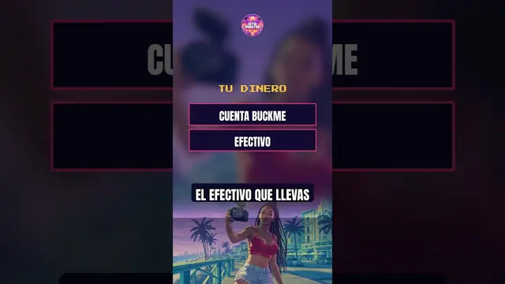

Se abre en YouTubeDe qué trata el vídeo
En GTA 6 el dinero no está siempre a salvo: el efectivo que llevas encima se pierde si te matan antes de ingresarlo. Lo contó Rob Nelson, de Rockstar North.
Tu dinero se divide en dos: la cuenta BuckMe, que está segura, y el efectivo, con un máximo de 20.000 $ según GTABase. Por eso tiene sentido ir al banco sin robarlo: después de cada golpe, al cajero.
¿Tú lo ingresas o lo arriesgas? Cuéntalo en los comentarios y suscríbete para más consejos de dinero en GTA VI.
Título en YouTube: «GTA 6: pierdes tu dinero en efectivo si mueres». Análisis hecho con material oficial de Rockstar Games, sin filtraciones.